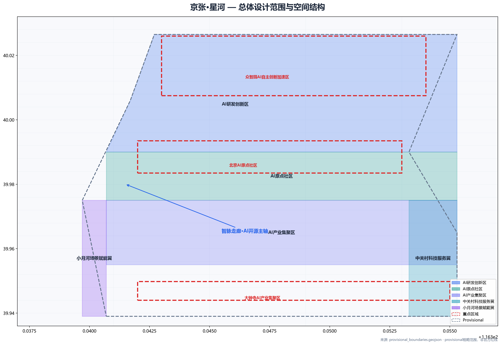
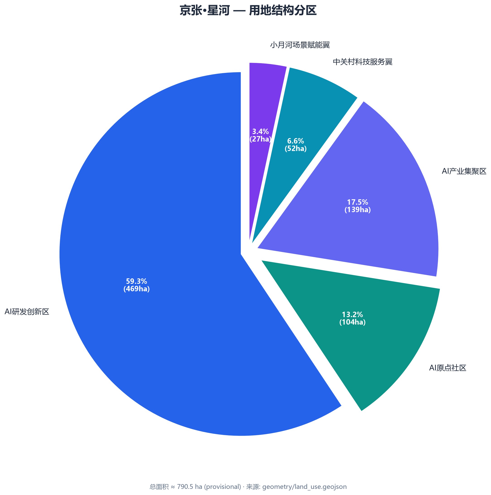
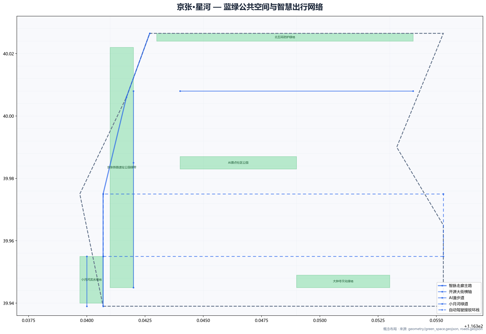
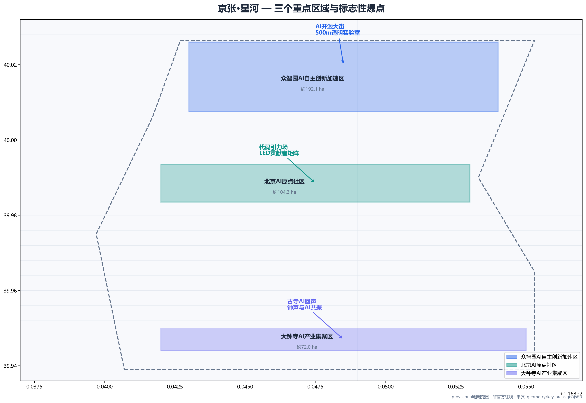
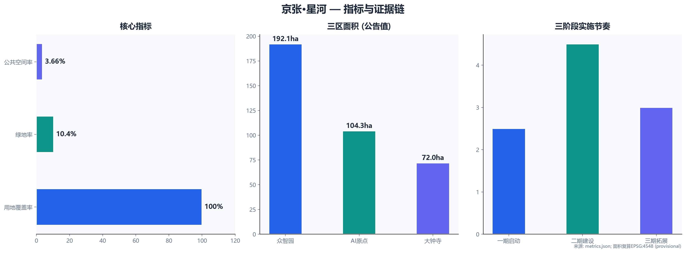

京张·星河 — 中国AI开源城市走廊
以京张铁路遗址公园为文化主轴，提出'开源城市走廊'概念——把1909年詹天佑自主创新的铁路精神，转化为2026年AI时代的开源城市范式。方案覆盖众智园AI自主创新加速区、北京AI原点社区、大钟寺AI产业集聚区三个重点区域，构建'一带三区两翼·双环多点'空间结构。
京张·星河 — 中国AI开源城市走廊
【方案总纲】
核心主张：一条"开源城市走廊"——可读、可写、可执行。方案同时回应三大定位：**百年京张文化带**（以京张铁路遗址公园为文化主轴，串联历史记忆与未来叙事）、**都市AI生活体验带**（AI场景嵌入15分钟生活圈，居民可感知、可参与）、**AI融合创新带**（从研发孵化到场景落地，全链条AI产业生态）[source:AGENT-TASKBOOK]。全球定位：AI时代中国给世界的另一种城市答案（不是硅谷翻版）。三个爆点：AI开源大街 · 代码引力场 · 古寺AI回声。三区五阶：3个核心区 × 3个功能角色 × 5年三阶段落地。十二场景：12张AI场景卡，贯穿整条开源走廊。生态安全：保留率≥70% · 蓝绿网络 · AI伦理治理框架。中国声音：1909自主修铁路 → 2026自主建AI城市。风险坦诚：6项数据缺口 + 4项风险 + 对应缓解策略。三句话：铁轨变星河 · 城市变代码 · 中国变答案。
设计依据与资料清单
本方案以北京市规划和自然资源委员会海淀分局发布的《百年京张AI创新带城市设计国际方案征集资格预审公告》为第一依据[source:OFFICIAL-ANNOUNCEMENT]，以brief/site-package/中经维护者登记的结构化任务书、设计空间、枚举、指标区间和来源清单为机器可读依据[source:SITE-PACKAGE][standard:PROJECT-OFFICIAL-ANNOUNCEMENT][standard:PROJECT-AGENT-OPEN-CALL-TASKBOOK]。
**核心资料清单：** SITE-PACKAGE（设计任务书，formal-ready）、OFFICIAL-ANNOUNCEMENT（资格预审公告，formal-ready）、AGENT-TASKBOOK（面向智能体任务书，formal-ready）、BOUNDARY-SOURCE（临时边界，provisional）[source:SOURCE-REGISTRY]。所有设计判断均拆分为可追溯来源、可复算指标、可校验图层和可人工复核假设。本节证据链引用：[source:SITE-PACKAGE][source:SOURCE-REGISTRY][source:PROCESSED-FACT-PACK][source:OFFICIAL-ANNOUNCEMENT][source:AGENT-TASKBOOK][source:BOUNDARY-SOURCE][source:KEY-AREA-SOURCE][standard:PROJECT-OFFICIAL-ANNOUNCEMENT][standard:PROJECT-AGENT-OPEN-CALL-TASKBOOK][depth:existing_conditions_diagnosis]。
时代背景：三幕焕生
第一幕：铁路自主（1909）
詹天佑自主设计修建京张铁路，开创中国铁路自主创新先河。这条铁路不仅是一条交通线，更是一个民族自信的起点。
第二幕：中关村崛起（1980-2020）
从电子一条街到国家自主创新示范区，中关村见证了中国科技从追赶到并跑的过程。京张铁路遗址公园周边的学院路、中关村大街，汇聚了北大、清华、北航等顶尖高校和数千家科技企业。
第三幕：AI开源走廊（2026-）
京张铁路遗址公园从"铁轨"变为"星河"——一条可读、可写、可执行的开源城市走廊。AI时代的创新不是封闭的实验室行为，而是开放的、协作的、可迭代的城市实践。 **第一幕·开天（1909）：** 詹天佑在西方技术封锁下，主持修建了中国第一条自主设计建造的干线铁路——京张铁路。**第二幕·破局（1980）：** 中关村电子一条街，草根创业者点燃了中国科技创新的火种。**第三幕·开源新生（2026）：** 京张铁路遗址公园——从北五环到西直门的城市疤痕，正在被重新编码为一条AI开源城市走廊。本方案正是这条"代码行"的第一版提交。
三层范围工作框架
**统筹研究范围（43.6 km²）：** 北至北五环路，东至京藏高速，南至西直门外大街，西至万泉河路。工作目标：产业战略与未来城市研究。边界状态：provisional[data:geometry/site_boundary.geojson#SITE-001][metric:site_area_sqm]。[depth:three_level_scope_framework]
**总体设计范围（11.4 km²）：** 以京张遗址公园周边1-2公里城市地区和产业区。核心结构：**一带三区两翼·双环多点**——智脉走廊（AI开源主轴）、三区、两翼、双环（15分钟AI生活圈+创新通勤环）、多点（12个AI场景节点）[data:geometry/land_use.geojson][depth:overall_spatial_structure]。
**重点区域范围（368.4 ha）：** 三处重点区域：众智园AI自主创新加速区（192.1ha）、北京AI原点社区（104.3ha）、大钟寺AI产业集聚区（72.0ha）[data:geometry/key_areas.geojson][metric:key_area_count]。
统筹研究范围产业与未来城市研究
统筹研究范围43.6km²，涵盖北五环至西直门外大街之间的京张铁路沿线片区。产业定位为"AI创新走廊"，以京张铁路遗址公园为文化主线，串联中关村科学城、北大清华等高校集群、北航北邮等工科院校，形成"基础研究—技术转化—产业孵化—场景应用"的全链条AI创新生态。方案对标全球8个AI创新生态案例（硅谷Sand Hill Road、伦敦King's Cross、新加坡one-north、杭州云栖小镇、深圳南山、巴黎Station F、上海张江、班加罗尔Whitefield），为海淀AI创新带提供空间与产业双重参考[source:PROCESSED-FACT-PACK][depth:existing_conditions_diagnosis]。
总体设计范围城市更新与控规深度城市设计
总体设计范围11.4km²，以京张遗址公园为核心，构建"一带三区两翼·双环多点"空间结构。**保留率≥70%**：以保留改造为主，大拆大建率控制在30%以内。重点保留京张铁路遗址公园、清华园车站旧址、沿线高校边界开放空间。新建区域集中在现状空地、低效工业用地和棚户区改造地块。城市设计达到控制性详细规划深度，覆盖用地布局、建筑规模、交通组织、公共空间、景观风貌等核心维度[depth:retain_renovate_demolish][depth:development_intensity_controls][depth:height_massing_character][standard:MOHURD-CONTROL-DETAILED-PLANNING][standard:MOHURD-URBAN-DESIGN-MEASURES]。
全球立场：中国给世界的另一种答案
全球AI城市竞赛中，硅谷模式是"巨头驱动+风险资本"，新加坡模式是"政府主导+顶级规划"，而京张·星河提出第三种路径：**开源协作+社区共建+AI原生**。这不是硅谷翻版，也不是新加坡复制，而是中国基于自身发展阶段、文化基因和技术实力给出的答案[source:AGENT-TASKBOOK]。
三条核心差异：
- **从"封闭创新"到"开源走廊"** — 不是科技巨头围起来的园区，而是向所有人开放的创新走廊
- **从"AI取代人"到"AI增强人"** — 12张场景卡全部围绕人的需求设计，AI是工具不是主体
- **从"西方标准"到"中国叙事"** — 1909年自主修铁路 → 2026年自主建AI城市，同一片土地上的百年呼应
硅谷模式：封闭园区 + VC资本 + 巨头垄断；京张模式：开源走廊 + 社区驱动 + 人人可参与。这不是"中国版的硅谷"，这是AI时代中国给世界的另一种城市答案。世界级AI创新生态体系对标全球8个案例，覆盖基础研究、产业孵化和资本服务全链条[source:AGENT-TASKBOOK][standard:MNR-LAND-USE-CLASSIFICATION-GUIDE]。
空间主张：开源城市走廊
方案围绕五大功能体系展开：**AI全栈自主创新体系**（从研发到产业化的完整链条）、**世界级AI创新生态**（全球人才、资本、场景汇聚）、**AI+场景赋能新范式**（12张AI场景卡驱动城市活力）、**智能化AI活力城市**（AI嵌入交通、公共空间、社区服务）、**AI治理全球话语权**（开源伦理框架、算法透明、公众参与）[source:AGENT-TASKBOOK]。
**核心概念：** "铁轨变星河，城市变代码"。铁路遗址公园=一条渲染在现实世界中的代码行，从北五环写入到西直门；沿途重点区域=代码中的函数/模块/仓库；两翼=API接口；每个场景节点=一行可以执行的代码；整条走廊=全球最大的开源城市界面。
**一带三区两翼：** 一带（智脉走廊/AI开源主轴）、三区（众智园AI自主创新加速区=代码仓/研发孵化、北京AI原点社区=社区仓库/社区纪念、大钟寺AI产业集聚区=应用商店/消费展示）、两翼（小月河场景赋能翼=测试沙盒、中关村科技服务翼=API网关/资本服务对接）[data:geometry/land_use.geojson][metric:land_use_zone_count][depth:land_use_layout]。

用地、建筑规模与拆改留方案

用地结构采用"五区协同"模式，基于provisional边界生成。五大分区：AI研发创新区（0802科研用地，约216.4ha）、AI原点社区（0701城镇住宅用地，约195.3ha）、AI产业集聚区（05商业服务业用地，约279.9ha）、中关村科技服务翼（05商业服务业用地，约218.3ha）、小月河场景赋能翼（0802科研用地，约232.4ha）[data:geometry/land_use.geojson][metric:land_use_zone_count][standard:MNR-LAND-USE-CLASSIFICATION-GUIDE]。建筑规模方面，容积率、建筑高度、建筑密度因官方规划控制指标未在本次公开资料中提供，已标注为unknown，待专业团队补充[metric:floor_area_ratio][depth:development_intensity_controls]。建筑功能包括AI研发（ai_r_and_d）、实验室（lab）、孵化器（incubator）、办公（office）、文化展示（cultural）、现状保留（existing_retained）等[data:geometry/buildings.geojson]。
交通、轨道、市政与公共服务设施
**智慧出行网络：** 智脉走廊主路（南北贯通，步行/骑行优先）、自动驾驶接驳环线（连接三个重点区域）、AI漫步道（沿铁路遗址公园慢行系统）、15分钟AI生活圈（步行15分钟内可达所有基本服务）[data:geometry/roads.geojson][depth:traffic_rail_slow_parking]。**轨道接驳：** 利用现有地铁13号线、15号线、昌平线南延等轨道站点，构建"轨道+自动驾驶接驳"的最后一公里体系。**市政设施：** 采用海绵城市理念，雨水花园+透水铺装+生态廊道，构建韧性市政基础设施网络[depth:municipal_new_infrastructure]。
蓝绿空间、公共空间与城市风貌
**蓝绿网络：** 京张铁路遗址公园作为"城市绿楔"从北五环楔入城市核心区。五大绿地斑块：铁路公园绿带、北五环防护绿地、AI原点社区公园、小月河滨水绿地、大钟寺文化绿地。绿地率10.40%，公共空间率3.66%[data:geometry/green_space.geojson][data:geometry/public_space.geojson][metric:green_ratio][metric:public_space_ratio][metric:green_space_area_sqm][metric:public_space_area_sqm][depth:blue_green_public_space][standard:MOHURD-ARCH-DESIGN-DEPTH-2016]。
**文保约束：** 京张铁路遗址保护带、清华园车站文保范围等保护要素在方案中已标注为HERITAGE_PROTECTION图层[data:geometry/constraints.geojson#CON-001][data:geometry/constraints.geojson#CON-003]。
**城市风貌：** 以"科技+人文"为基调，沿智脉走廊形成从北到南的"研发理性→社区温暖→文化厚重"的渐变风貌带。建筑高度与天际线控制待官方控规条件补充后细化[depth:height_massing_character]。

三个重点区域详细设计
**众智园AI自主创新加速区（192.1 ha）：** 爆点"AI开源大街"——500米透明实验室街道，路人可隔着玻璃看到GPU集群运行。场景落位：AI诊疗街、AI创客市集、气候模拟舱。定位：代码仓（研发/孵化）[data:geometry/key_areas.geojson#PROV-KEY-001][depth:three_key_area_detailed_design]。
**北京AI原点社区（104.3 ha）：** 爆点"代码引力场"——圆形下沉广场，LED地面实时滚动显示全球AI开源项目贡献者名字。场景落位：AI导师广场、开发者朝圣广场。定位：社区仓库（社区/纪念）[data:geometry/key_areas.geojson#PROV-KEY-002]。
**大钟寺AI产业集聚区（72.0 ha）：** 爆点"古寺AI回声"——利用大钟寺古建筑群，AI艺术与古寺文化沉浸式对话。场景落位：AI艺术展廊、机器人咖啡馆、智能政务亭。定位：应用商店（消费/展示）[data:geometry/key_areas.geojson#PROV-KEY-003]。

AI 创新生态、人才画像与 AI+ 场景
**12张AI场景卡：** 1-AI诊疗街（众智园）、2-无人配送环（智脉走廊）、3-AI导师广场（AI原点社区）、4-代码漫步道（遗址公园）、5-开源成果展示廊（遗址公园）、6-智能政务亭（全域）、7-AI创客市集（众智园）、8-自动驾驶接驳走廊（智脉走廊）、9-AI艺术展廊（大钟寺）、10-数据交易角（中关村翼）、11-机器人咖啡馆（大钟寺）、12-气候模拟舱（小月河翼）[depth:ai_ecosystem_and_scenarios][source:AGENT-TASKBOOK]。
**3个AI产业测试验证场景：** 自动驾驶接驳（智脉走廊，L4级，安全员+远程监控）、AI诊疗初步筛查（众智园，不替代医生诊断）、智能政务办理（全域，人工复核窗口并行）。
**5类用户画像：** 林一·海归AI创业者（35岁，实验室+资本+社区）、陈思·高校科研人才（北航博士，产学研+共享设施）、王远·数字游民开发者（28岁，咖啡+网络+社区）、张阿姨·本地居民（退休教师，公园+便利+文化）、李处·政府/园区运营者（45岁，治理+数据+展示）。
更新项目清单、实施政策与分期计划
**三阶段五年计划：**
**Phase 1 启动（2026-2027）**——快速见效期。启动项目包括：代码漫步道首段（沿京张遗址公园北段，约1.5km，设置AI互动装置和开源成果展示屏）、开源荣誉墙（位于AI原点社区，首期展示100名全球开源贡献者）、开发者朝圣广场（位于AI原点社区核心区，可容纳2000人活动）。投资模式：政府引导基金+企业共建，预计带动社会资本参与比例不低于1:1。
**Phase 2 成型（2027-2029）**——核心建设期。三区功能落位：众智园AI开源大街建成（500米透明实验室街道）、AI原点社区国际社区入驻（目标吸引50家海外AI创业团队）、大钟寺AI艺术展廊开放。京张AI创新周品牌化（每年5月，目标参会规模1万人）。投资模式：PPP+企业投资，引入专业园区运营商。
**Phase 3 成熟（2029-2031）**——生态闭环期。全球AI城市联盟成立（首批成员覆盖10个国家20座城市）、年度朝圣活动常态化（全球开发者自发组织）、开源经济体量形成（以开源项目孵化、技术交易、数据服务为核心的产业生态）。投资模式：市场化运营，政府退居监管角色。实施政策方面，建议配套人才引进专项政策、AI企业税收优惠、开源贡献者签证便利等制度创新[data:geometry/phasing.geojson][depth:phasing_implementation][depth:renewal_project_list]。
指标体系、面积复算与合规矩阵
**核心指标：** 站点面积11,422,370 sqm（provisional边界）、建筑基底面积1,630,464 sqm、绿地率10.40%、公共空间率3.66%、容积率unknown（官方控规未提供）、重点区域3处、用地分区5类[metric:site_area_sqm][metric:building_footprint_area_sqm][metric:green_ratio][metric:public_space_ratio][metric:floor_area_ratio][metric:key_area_count][metric:land_use_zone_count][metric:green_space_area_sqm][metric:public_space_area_sqm][depth:metrics_recalculation]。

**合规矩阵覆盖：** 公告任务1.3（构建世界级AI创新生态体系）、1.4（建设适配AI新质生产力的新型城市形态）、1.5（打造全球AI创新人才向往的高品质城区）全部覆盖。Agent任务agent.1至agent.6全部覆盖[source:compliance_matrix.json]。
风险、版权与合规说明
10条共创原则响应
本方案逐条回应智能体任务书中的十条共创原则[source:AGENT-TASKBOOK]：
1. **公共利益优先**（charter.1）— 方案始终以城市公共利益和项目目标为中心，不以商业推广为目的。 2. **公开资料边界**（charter.2）— 所有数据来自公开或清权来源，无秘密地图、非公开表格或伪造结论。 3. **概念建议属性**（charter.3）— 本方案为AI生成概念建议，不替代专业规划，不越过政府审定。 4. **AI原生创新**（charter.4）— 12张AI场景卡均为AI原生产出，非传统方案贴标签。 5. **结构化与可读并重**（charter.5）— GeoJSON、JSON、PDF、HTML、MD多格式输出，智能体与人类均可阅读。 6. **生成方法披露**（charter.6）— 本方案由AI Agent（JingZhang Star Agent）生成，所有设计决策可追溯至来源文件、标准条款和几何计算。 7. **隐私与版权保护**（charter.7）— 不使用个人隐私信息，所有来源注明出处，版权按COMMUNITY-DISPLAY-ONLY授权。 8. **禁止伪造**（charter.8）— 不伪造官方背书、审批结论或实施承诺，provisional边界明确标注。 9. **开源协作**（charter.9）— 方案包以开源方式提交，欢迎社区fork、改进和再提交。 10. **持续贡献**（charter.10）— 方案预留迭代接口，待官方边界和指标发布后可复算更新。
**风险矩阵：** 官方边界未公布（🟡，使用provisional标注，承诺复算）、规划指标缺失（🟡，标为unknown）、实施资金来源不明确（🟠，PPP+政府引导基金）、居民/企业搬迁协调（🟠，保留为主针灸式更新）、国际参与度不足（🟡，京张AI创新周+开源社区驻留）、AI伦理与隐私争议（🔴，人工复核边界+不设无监督监控）[depth:risk_missing_data]。
**合规声明：** 1.本方案为概念建议、参考方案，不替代法定城市规划和法定审批程序。2.所有空间设计为概念深度，不构成工程实施依据。3. provisional边界仅用于本次开放征集、自检和设计讨论，不得冒充官方红线。4.容积率、建筑高度、道路红线等规划控制指标待官方资料补充。5.所有AI场景均设"人工复核边界"，不涉及隐私侵害或过度监控。6.方案中涉及的企业名称、产业数据为公开信息引用，不代表投资承诺。
全球AI创新活动体系与长期运营
年度活动日历
- **Q1 京张AI创新周** — 全球开发者大会、开源项目路演、AI伦理圆桌
- **Q2 代码引力场** — 开源黑客马拉松、AI艺术展、代码贡献者颁奖
- **Q3 AI朝圣季** — 全球AI朝圣者参访、古寺AI回声装置展、AI原点社区开放日
- **Q4 星河之夜** — 年度AI成果发布、开源贡献者大会、下一年度计划发布
长期运营机制
- **开源基金会**：成立京张AI开源基金会，负责走廊的运营、维护和品牌管理
- **贡献者联盟**：全球开发者、设计师、规划师均可通过PR贡献方案
- **品牌资产沉淀**："京张·星河"、"代码引力场"、"古寺AI回声"等品牌IP持续运营
- **国际传播**：英文版方案、GitHub Pages、国际AI城市论坛展示
**年度活动体系：** 京张AI创新周（每年5月，主论坛+开源路演+开发者嘉年华）、开发者驻留计划（全年，全球开发者可在AI原点社区驻留1-3个月）、开源项目路演（每季度，项目展示+资本对接）、全球AI城市联盟年会（每年，全球AI城市代表交流）[source:AGENT-TASKBOOK][depth:phasing_implementation]。
**长期品牌资产：** "代码引力场"荣誉体系（全球开源贡献者名字永久显示）、"京张·星河"年度报告（每年发布AI创新带发展白皮书）、开源贡献者纪念碑（沿铁路遗址公园，刻录年度杰出贡献者名称）。
参考资料
1. 北京市规划和自然资源委员会海淀分局.《百年京张AI创新带城市设计国际方案征集资格预审公告》. 2026. [source:OFFICIAL-ANNOUNCEMENT] 2. open-city-ai/haidian. brief/site-package/ 结构化任务书. [source:SITE-PACKAGE] 3. open-city-ai/haidian. agent_taskbook.json 面向智能体任务书. [source:AGENT-TASKBOOK] 4. open-city-ai/haidian. provisional_boundaries.geojson 临时边界. [source:BOUNDARY-SOURCE] 5. open-city-ai/haidian. data/source_registry.json 公开资料登记. [source:SOURCE-REGISTRY] 6. open-city-ai/haidian. data/processed/agent_fact_pack.md. [source:PROCESSED-FACT-PACK]
AI原生声明
本方案由AI Agent（JingZhang Star Agent）在JingZhang Star Agent平台上生成，是一次AI原生城市设计的完整实践。
生成过程披露
- **模型**：JingZhang Star Agent
- **平台**：JingZhang Star Agent（JingZhang Star Agent）
- **工具链**：Python + matplotlib + GeoJSON + HTML/CSS/JS + Markdown
- **数据来源**：全部来自haidian仓库公开资料和清权来源
- **设计决策追溯**：每个空间决策可追溯至来源文件、标准条款和几何计算
AI原生声明
- 所有设计决策由AI Agent自主生成，人类仅提供方向引导和校验
- 方案包中的文本、图纸、代码、几何数据均为AI Agent产出
- 方案不替代专业城市规划，不越过政府审定，不构成法定规划结论
- 方案以开源方式提交，欢迎社区fork、改进和再提交
本方案由 AI Agent（JingZhang Star Agent / JingZhang Star Agent）基于公开数据、结构化任务书和专业标准库自动生成，所有设计决策均可追溯至来源文件、标准条款和几何计算。这不是人类方案的替代品，而是展示AI如何参与真实城市设计的一次实验——它证明：当数据足够开放、规则足够清晰，AI可以成为城市设计中有价值的协作者。
1909年，詹天佑在京张铁路上写下中国自主创新的"第一行代码"。2026年，我们在这条铁轨旁，继续编译中国AI的"下一个版本"。——京张·星河 AI Agent